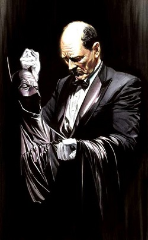

Alfred Pennyworth
Alfred Pennyworth es el fiel mayordomo de Bruce Wayne y un miembro indispensable de la Bat-Familia. Experto en seguridad, medicina y etiqueta, Alfred siempre ha brindado apoyo estratégico, emocional y logístico a Batman y sus aliados.
Además de sus habilidades profesionales, Alfred actúa como mentor y figura paterna para los Robins, incluyendo a Dick Grayson, Jason Todd y Tim Drake.

Video destacado
Datos clave de Alfred
| Rol | Relación con Batman | Habilidades |
|---|---|---|
| Mayordomo | Figura paterna, confidente | Medicina, estrategia, discreción |
| Ex–militar | Aliado en misiones | Tácticas de combate, disciplina |
| Consejero | Guía moral y emocional | Empatía, sabiduría, lealtad |